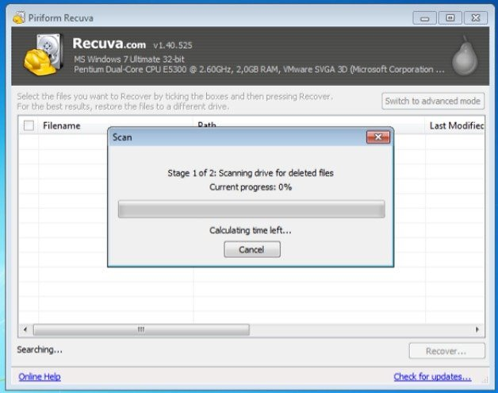

How To Recover Lost Data In Android
If You are not rooted !
Step1:
The first thing to do is to connect the phone as a Mass Storage Device to your computer, ie, via Data Cable.
Step2:
Then download "Recuva" (you can use either the paid or free version), which is a program to recover files.

Step3:
When you run Recuva, the first thing to do is select the type of file you want to recover: Pictures, Videos, Music, Documents, etc.
Important: When you finish recovering your deleted files try to save them on a different device from the one on which they were originally lost: this can sometimes cause conflicts and damage recovery.
If You are root !
Step1:
Download "Undelete" app on your android.
Step2:
The application is very simple. The first thing to do is to select the storage device from which you want to retrieve your data.
Step3:
Then you scan the selected device.
Step4:
The process may take between 2 and 10 minutes, depending on your memory size and the amount of stored data.
Finally: When finished you will be presented with retrievable data in several tabs: Files, Pictures, Music, Videos, Documents and Files. Recovered data returns to its place of origin, ie wherever it was saved before they were lost.